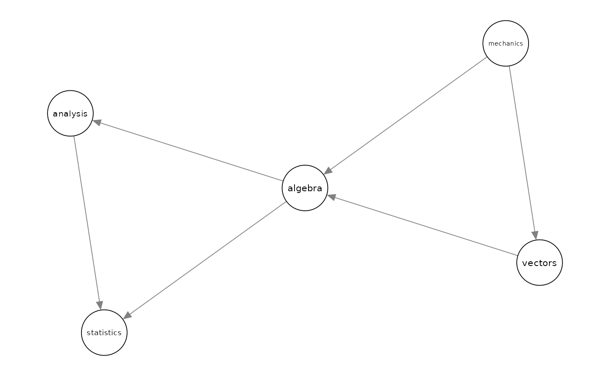
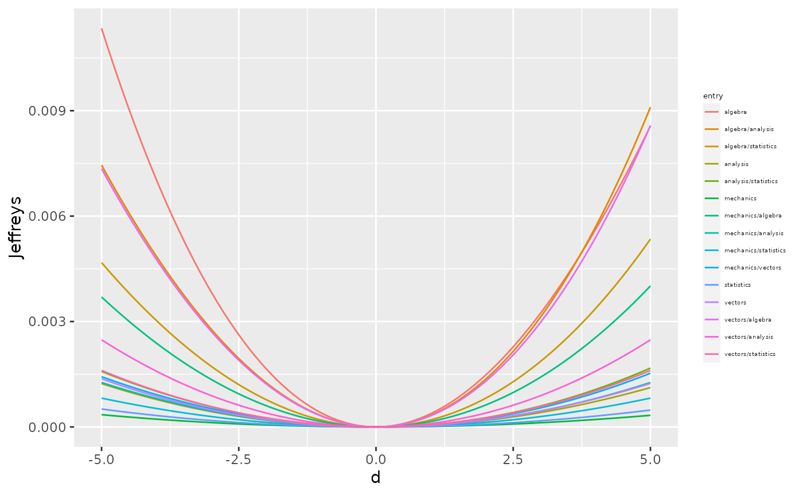

The functionalities of bnmonitor for sensitivity analysis in Gaussian BNs are illustrated next using the mathmarks dataset bundled within the package.
#> mechanics vectors algebra analysis statistics
#> 1 77 82 67 67 81
#> 2 63 78 80 70 81
#> 3 75 73 71 66 81
#> 4 55 72 63 70 68
#> 5 63 63 65 70 63
#> 6 53 61 72 64 73The data includes the grades (out of 100) of students in five maths exams: mechanics, vectors, algebra, analysis and statistics.
The structure of a BN for this data is first learnt using the package bnlearn and the maximum likelihood estimate of its parameters is computed and stored in bnfit.

bnfit <-bn.fit(bn, mathmarks)To start the sensitivity analysis for the parameters of the learnt BN, one first need to transform bnfit to objects of class GBN (for standard sensitivity analysis) and CI (for model-preserving sensitivity). This can be done using the functions bn2gbn and bn2ci respectively.
#> [1] "GBN" "CI"Perturbation of the mean vector
A varied Gaussian BN after a perturbation of an entry of the mean vector can be obtained with the function mean_var, which can only be applied to an object of class GBN. Below, we vary the fifth entry of the mean vector (statistics) by an additive factor 10.
mean_varied <- cbind(gbn$order, round(gbn$mean, 2),round(mean_var(gbn = gbn, entry = 5, delta = 10)$mean, 2))
colnames(mean_varied) <- c("Course", "Original Mean", "Varied Mean")
mean_varied#> Course Original Mean Varied Mean
#> [1,] "mechanics" "38.95" "38.95"
#> [2,] "vectors" "50.59" "50.59"
#> [3,] "algebra" "50.6" "50.6"
#> [4,] "analysis" "46.68" "46.68"
#> [5,] "statistics" "42.31" "52.31"The overall effect of such variations can be assessed in terms of dissimilarity measures: the Kullback-Leibler divergence (KL) and Jeffrey’s divergence (Jeffreys). For instance, let’s see what’s the effect of variations in the mean of the statistics exam.
kl_var5 <- KL(gbn, where = "mean", entry = 5, delta = seq(-10,10,0.1))
jef_var5 <- Jeffreys(gbn, where = "mean", entry = 5, delta = seq(-10,10,0.1))
plot(kl_var5)
plot(jef_var5)
More interestingly, one can check the different effect of variations of different parameters (code not shown).

Misspecifications of the mean of the algebra exam would have the biggest effect on the distribution of the Gaussian BN, since it leads to the biggest distance between the original and the varied network.
Perturbation of the covariance matrix
Care must be taken when performing perturbations of the covariance matrix, for two reasons:
the perturbed matrix may not be positive semidefinite;
the perturbed matrix may not respect the conditional independences of the underlying BN.
Suppose we are interested in assessing the effect of varying the covariance between Statistics and Vectors.
gbn$order#> [1] "mechanics" "vectors" "algebra" "analysis" "statistics"
gbn$covariance#> [,1] [,2] [,3] [,4] [,5]
#> [1,] 305.7680 127.22257 101.57941 100.88420 109.66411
#> [2,] 127.2226 174.23649 85.65601 85.06978 92.47337
#> [3,] 101.5794 85.65601 114.56549 113.78140 123.68375
#> [4,] 100.8842 85.06978 113.78140 223.30480 157.73746
#> [5,] 109.6641 92.47337 123.68375 157.73746 303.49318The parameter of interest correspond to the entry (2,5) of the covariance matrix.
A standard perturbed covariance matrix can be constructed with the covariance_var function. Suppose we want to increase the covariance between Statistics and Vectors by an additive factor of 10.
d <- 10
covariance_var(gbn, entry = c(2,5), delta = d)$covariance#> [,1] [,2] [,3] [,4] [,5]
#> [1,] 305.7680 127.22257 101.57941 100.88420 109.6641
#> [2,] 127.2226 174.23649 85.65601 85.06978 102.4734
#> [3,] 101.5794 85.65601 114.56549 113.78140 123.6837
#> [4,] 100.8842 85.06978 113.78140 223.30480 157.7375
#> [5,] 109.6641 102.47337 123.68375 157.73746 303.4932The above perturbation made the original network structure not valid for the new covariation matrix. In order to ensure that the perturbed covariance is still valid for the underlying network structure, we can use model-preserving methods. These apply multiplicatively and not additively as standard methods, but we apply the same change in the covariance via the perturbation delta defined below. We can construct various covariation matrices using the following commands:
delta <- (d + gbn$covariance[2,5])/gbn$covariance[2,5]
total_covar_matrix(ci, entry = c(2,5), delta = delta)#> [,1] [,2] [,3] [,4] [,5]
#> [1,] 1.108139 1.108139 1.108139 1.108139 1.108139
#> [2,] 1.108139 1.108139 1.108139 1.108139 1.000000
#> [3,] 1.108139 1.108139 1.108139 1.108139 1.108139
#> [4,] 1.108139 1.108139 1.108139 1.108139 1.108139
#> [5,] 1.108139 1.000000 1.108139 1.108139 1.108139
partial_covar_matrix(ci, entry = c(2,5), delta = delta)#> [,1] [,2] [,3] [,4] [,5]
#> [1,] 1.000000 1.000000 1.108139 1.108139 1.108139
#> [2,] 1.000000 1.000000 1.108139 1.108139 1.000000
#> [3,] 1.108139 1.108139 1.108139 1.108139 1.108139
#> [4,] 1.108139 1.108139 1.108139 1.108139 1.108139
#> [5,] 1.108139 1.000000 1.108139 1.108139 1.000000
row_covar_matrix(ci, entry = c(2,5), delta = delta)#> [,1] [,2] [,3] [,4] [,5]
#> [1,] 1.000000 1 1.000000 1.000000 1.108139
#> [2,] 1.000000 1 1.000000 1.000000 1.000000
#> [3,] 1.000000 1 1.000000 1.000000 1.108139
#> [4,] 1.000000 1 1.000000 1.000000 1.108139
#> [5,] 1.108139 1 1.108139 1.108139 1.000000
col_covar_matrix(ci, entry = c(2,5), delta = delta)#> [,1] [,2] [,3] [,4] [,5]
#> [1,] 1 1.000000 1.000000 1.000000 1
#> [2,] 1 1.000000 1.108139 1.108139 1
#> [3,] 1 1.108139 1.000000 1.000000 1
#> [4,] 1 1.108139 1.000000 1.000000 1
#> [5,] 1 1.000000 1.000000 1.000000 1Importantly, notice that standard methods are applied to objects of class gbn, whilst model-preserving methods operate over ci objects.
For any of the four available methods (total, partial, row and column) the perturbed covariance matrix can be calculated with the function model_pres_cov. For instance in the case of a partial covariation:
model_pres_cov(ci, type = "partial", entry = c(2,5), delta = delta)$covariance#> [,1] [,2] [,3] [,4] [,5]
#> [1,] 305.7680 127.22257 112.56414 111.79374 121.5231
#> [2,] 127.2226 174.23649 94.91879 94.26916 102.4734
#> [3,] 112.5641 94.91879 126.95451 126.08563 137.0588
#> [4,] 111.7937 94.26916 126.08563 247.45281 174.7951
#> [5,] 121.5231 102.47337 137.05881 174.79507 303.4932Having constructed various covariation matrices, we can assess how far apart the original and the perturbed distributions are for various covariation methods. Available dissimilarity measures are Frobenius norm (Fro), Kullback-Leibler divergence (KL) and Jeffrey’s divergence (Jeffreys). Let’s consider the Frobenius norm.
d <- seq(-10, 10, 0.1)
delta <- (d + gbn$covariance[2,5])/gbn$covariance[2,5]
cov_stand <- Fro(gbn, entry = c(2,5), delta = d)
cov_col <- Fro(ci, type = "column", entry = c(2,5), delta = delta)
plot(cov_stand)
plot(cov_col)
As for the mean, we can check which entry of the covariance matrix has the biggest impact if varied. For simplicity here we pick the standard method only (code not shown).

From the above plot we can notice that the less robust entries of the covariance matrix are the variance of algebra, the covariance between algebra and analysis, and the covariance between algebra and vectors.
Another method to quickly have an overview of the effect of all parameters is KL_bounds which creates a table with upper bounds to the Kullback-Leibler divergence for all entries of the covariance matrix and all covariation methods.
KL_bounds(ci, delta = 1.2)#> row col standard total partial row_based col_based
#> 1 1 1 0.08745398 2.721918 2.410370 2.410370 2.410370
#> 2 1 2 0.11113375 2.721918 2.424361 2.424361 2.424361
#> 3 1 3 0.18319140 2.721918 2.661624 2.563009 2.563009
#> 4 1 4 0.03157487 2.721918 2.661624 2.563009 2.563009
#> 5 1 5 0.02356461 2.721918 2.661624 2.508260 2.508260
#> 6 2 2 0.10479440 2.721918 2.410370 2.410370 2.410370
#> 7 2 3 0.34492801 2.721918 2.661624 2.563009 2.563009
#> 8 2 4 0.04575001 2.721918 2.661624 2.563009 2.563009
#> 9 2 5 0.03394882 2.721918 2.661624 2.508260 2.508260
#> 10 3 3 0.26127953 2.721918 2.661624 2.563009 2.563009
#> 11 3 4 1.02446834 2.721918 2.661624 2.563009 2.563009
#> 12 3 5 0.54029638 2.721918 2.661624 2.508260 2.508260
#> 13 4 4 0.14403323 2.721918 2.661624 2.563009 2.563009
#> 14 4 5 0.19426900 2.721918 2.661624 2.508260 2.508260
#> 15 5 5 0.11777072 2.721918 2.410370 2.410370 2.410370By looking at the standard method column, we have the confirmation that the 11th entry, corresponding to algebra/analysis, is the most critical for the robustness of the network.